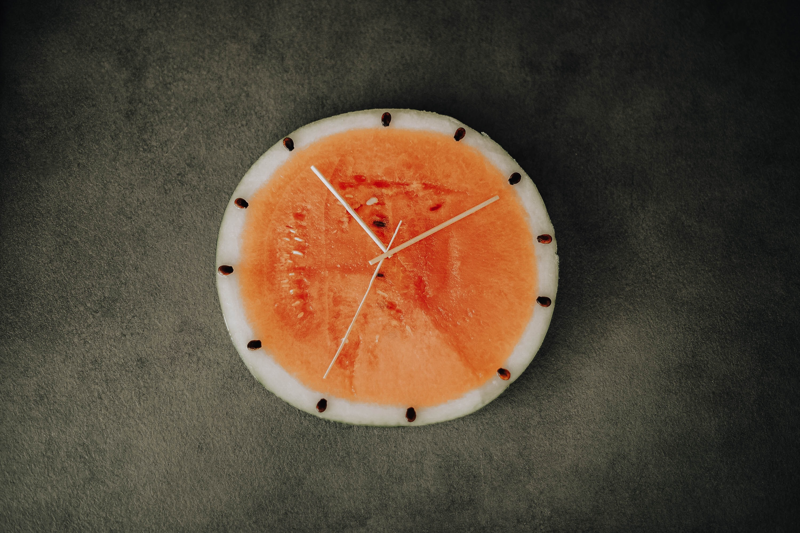
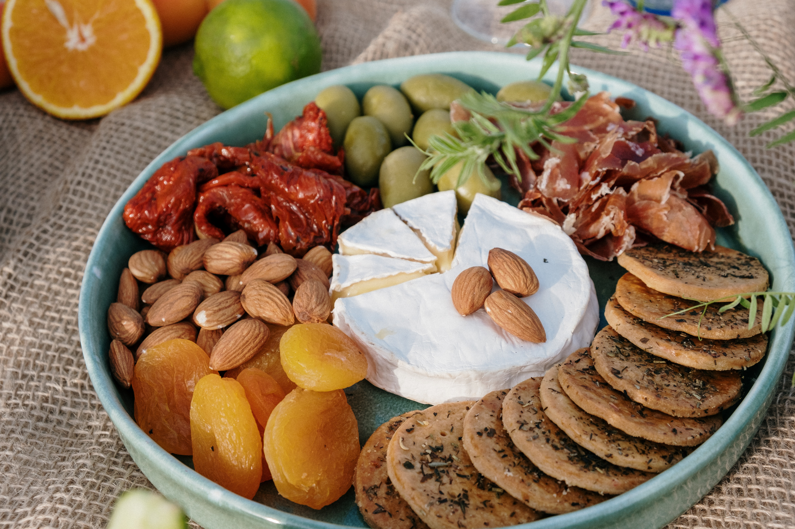

Jak schudnąć?
Szczupła sylwetka to marzenie wielu z nas. Niektórzy zmagają się z kilkoma kilogramami nadwagi, które zdecydowanie łatwiej zrzucić, niż dodatkowe 10 czy 15 kg. Podstawą redukcji wagi jest dieta i aktywność fizyczna. Odpowiednia kaloryczność posiłków i ich zróżnicowanie plus dobrze dobrane ćwiczenia stanowią klucz do sukcesu. Przeczytaj, jak możesz schudnąć pięć kilogramów za pomocą wprowadzenia zmian w swojej diecie i przykładowym ćwiczeniom fizycznym.

Miej motywację
W odniesieniu do odchudzania, wszyscy mamy własne wewnętrzne motywacje do próby zrzucenia kilogramów. Powody te mogą obejmować niesamowity wygląd na ślubie, możliwość zabawy z dziećmi na placu zabaw, poprawę zdrowia lub zwiększenie pewności siebie. W odniesieniu do każdej próby odchudzania musisz posiadać powód, dlaczego to w ogóle chcesz zrobić. Jeżeli, chcesz schudnąć pięć kilogramów do ślubu siostry i pięknie wyglądać w wymarzonej sukience – postaw sobie to za cel. Oprócz tego, że będziesz się fantastycznie prezentować, wpłynie to na twoje zdrowie nie tylko fizyczne, ale i psychiczne. Pamiętaj, że aktywność fizyczna wpływa na produkcję endorfin – hormonów szczęścia.
Regularnie się odżywiaj
Chcąc zacząć przygodę z odchudzaniem, w pierwszej kolejności musisz zacząć planować swoje posiłki. Nie może być tak, że jednego dnia będziesz spożywać śniadanie o 8, drugiego zaś o 10. To tyczy się wszystkich posiłków w ciągu dnia. Oczywiście, wiadomo, że nie zawsze uda Ci się zjeść dany posiłek o tej samej porze co wczoraj, ale staraj się w miarę możliwości o zachowanie ram czasowych. Pamiętaj również, aby nie wychodzić z domu bez śniadania. Stanowi ono podstawowy posiłek dnia. Po kilku godzinach od ostatniego posiłku, przed położeniem się do łóżka, nasz organizm wręcz domaga się, aby dostarczyć mu "paliwa" z pożywienia. Spożycie śniadania do dwóch godzin po obudzeniu się wpływa na regulację poziomu cukru we krwi (glukozy) oraz insuliny dostarczającej glukozę do komórek.

Spożywaj produkty bogate w błonnik
W procesie odchudzania bardzo ważne jest to, aby spożywać produkty zawierające błonnik. Błonnik pokarmowy to termin określający węglowodany pochodzenia roślinnego, które w przeciwieństwie do innych węglowodanów (takich jak cukry i skrobia) nie są trawione w jelicie cienkim i docierają w ten sposób do jelita grubego lub okrężnicy. Błonnik występuje w dwóch odmianach: nierozpuszczalny i rozpuszczalny. Nierozpuszczalny błonnik nie rozpuszcza się w wodzie. Jest to obszerny błonnik, który pomaga zapobiegać zaparciom i znajduje się w pełnych ziarnach, zbożach pszennych i warzywach, takich jak marchew, seler i pomidory.
Wprowadź do diety chude białko
Osoby, które się odchudzają, powinny pamiętać, o tym, że muszą do swojej diety wprowadzić odpowiednią ilość białka. Organizm ludzki potrzebuje białka, węglowodanów i tłuszczy w dość dużych ilościach, aby mógł prawidłowo funkcjonować. Jedną z głównych ról białka w procesie odchudzania jest to, iż wpływa ono na budowanie masy mięśniowej, przy jednoczesnej redukcji tkanki tłuszczowej, co w konsekwencji wpływa na przyśpieszenie metabolizmu. iałko stanowi cenny materiał budulcowy tkanki nerwowej i gruczołowej, wchodzi w skład płynów ustrojowych i wydzielin jak: krew, enzymy, hormony oraz uczestniczy w ważnych procesach regulacyjnych i transportowych. Białko to również jeden z podstawowych elementów diety – szczególnie dla osób uprawiających sport. U osób regularnie trenujących na siłowni, zapotrzebowanie na białko rośnie. Kwestia jego zapotrzebowania jest dość dyskusyjna, ale można przyjąć, że bezpieczny przedział to od 1,4 g do 2 g na kilogram masy ciała (u osób uprawiających sport). W gruncie rzeczy nie ma też wielkiego znaczenia czy jest się na masie czy redukcji. W pierwszym przypadku białko stanowi budulec, z którego organizm może syntetyzować białka i budować mięśnie. W drugim białko pomaga zapobiegać nadmiernej utracie tkanki mięśniowej oraz pomaga regulować głód.

Uzupełniaj zdrowe tłuszcze w diecie
Podobnie jak w przypadku węglowodanów, tłuszcze podczas odchudzania były uznawane, za coś złego. Wręcz, według niektórych diet, należy je całkowicie usunąć z jadłospisu – a jest to ogromny błąd. Zwłaszcza w przypadku "dobrych tłuszczów. Dobre tłuszcze, takie jak te znajdujące się w orzechach, nasionach i oliwie z oliwek, oferują wiele korzyści zdrowotnych, szczególnie dla serca. Tłuszcze nasycone (czyli, "złe") znajdują się w produktach pochodzenia zwierzęcego, mogą szkodzić naszemu zdrowiu, jeśli są spożywane w nadmiarze. Tłuszcze trans, najgorszy tłuszcz ze wszystkich, nie przynoszą żadnych korzyści, nie służą organizmowi i najlepiej ich unikać, jeśli to tylko możliwe. Zdrowe tłuszcze pomagają organizmowi wchłaniać witaminy (A,D, E i K) oraz zwiększają uczucie sytości, co jest bardzo ważne, jeżeli chcesz zrzucić nadmierne kilogramy. Ponadto, wpływają na poziom cukru we krwi, nie powodując jego gwałtownego wzrostu i nagłego spadku. Obecnie najlepszym sposobem na utratę wagi jest utrzymanie zawartości tłuszczu na poziomie około 35% kalorii dziennie — wybieraj zdrowe tłuszcze nienasycone jako większość swojego spożycia. Jedz zdrowe węglowodany i chude białka.
Nie objadaj się na noc
Kluczowym powodem, dla którego tak wielu z nas jest w cyklu stopniowego przybierania na wadze, jest to, że zjadamy ostatni posiłek dość późno w ciągu dnia, a nawet w nocy. Z przeprowadzonych badań wynika, że spożywanie późnej kolacji może przyczynić się do zwiększenia masy ciała i wysokiego poziomu cukru we krwi. Ponadto, spożywanie późnej kolacji pogarsza tolerancję glukozy i zmniejsza ilość spalanego tłuszczu. Osoby, które spożywają późno ostatni posiłek, zwykle późno zasypiają. Powoduje to zaburzony cykl snu, a tym samym zaburzony cykl dnia i posiłków. Spożywanie zbyt późno posiłków wpływa również na nieprawidłowe trawienie. Dzieje się tak, ponieważ pokarm nie trawi się prawidłowo i powoduje nadmierne wydzielanie kwasu w żołądku.
.png)
.png)
.png)
.png)
.png)